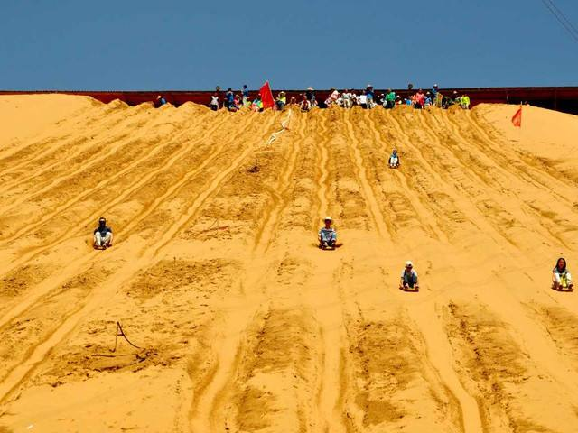

宁夏风光 NING XIA FENG GUANG 欢迎光临我的网站！ |
| 首页 | 塞上新景 | 沙湖苇舟 | 神秘西夏 | 沙坡鸣钟 | 须弥松涛 | 西部影城 |
| 宁夏沙坡头旅游景区有限责任公司位于宁夏中卫市城西16公里处，是国家首批5A级旅游景区。是宁、蒙、甘三省（区）的交接点，黄河第一入川口，是欧亚大通道，古丝绸之路的必经之地。这里南靠山峦叠嶂、巍峨雄奇的祁连山余脉香山，北连沙峰林立、绵延万里的腾格里大沙漠，中间被奔腾而下，一泻千里的黄河横穿而过，在沙与河之间，是一片郁郁葱葱、滴翠流红的古朴园林———童家园子。旅游区东起沙坡头水利枢纽堤坝，西至黑山峡宁夏、甘肃交界处，以沙坡头黄河两岸山水田园以及北部的腾格里沙漠为... | |
|  | 沙坡头沙鸣山的“沙坡鸣钟”是大自然赋予的世界少有的自然遗产. 浩翰无垠的腾格里沙漠，沙海莽莽、金涛起伏，由北面以不可遏制的凶蛮滚滚而来，到这里却突然而止，伏首在黄河岸边、香山脚下，形成了一个宽2000米、高约200米、倾斜60度的大沙坡，由此而得名沙坡头。水依沙山流淌，河以沙山为岸，相互依偎，亲密相处。天气晴朗时，人从沙坡向下滑，沙坡内便发出一种“嗡---嗡----”的轰鸣声，犹如金钟长鸣，故得“沙坡鸣钟”之美誉，是中国四大响沙之一。站在沙坡下抬头仰望，但见沙山悬若飞瀑，人乘流沙，如从天降，无染尘之忧，有钟鸣之乐，物我两忘，其乐无穷。 |
| 沙坡头集大漠、黄河、高山、绿洲为一处，具西北风光之雄奇，兼江南景色之秀美。有中国最大的天然滑沙场，有横跨黄河的“天下黄河第一索”，有黄河文化代表古老水车，有黄河上最古老的运输工具羊皮筏子，有沙漠中难得一见的海市蜃楼。可以骑骆驼穿越腾格里沙漠，可以乘坐越野车沙海冲浪，咫尺之间可以领略大漠孤烟、长河落日的奇观。 |
网站制作：马宁
本站只为介绍宁夏的美丽风光而创建，部分内容采集自互联网，版权归原作者所有
作者联系方式 E-mail:maning@qq.com QQ:463195760